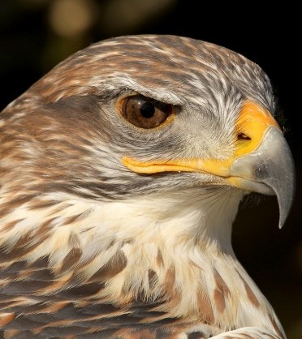

Животињски свет
Разноврсност вегетације Авале условила је опстанак и пратеће фауне листопадних шума.Погодни еколошки услови дају могућност живота многобројним врстама птица,које су прилагођене јаким летњимм сушама и високој топлоти.Гнезде се не само на дрвећу него и у жбуњу и трави.Чињеница је да је Авала,усред културних поља и надомак градског утицаја,условила и додатно богатство и разноврсност животињских врста.Карактеристичне врсте птица овог поднебља су медитеранска мрка сеница,сиријски шарени детлић,краткопрсти кобац.Чешће него другде су и следеће врсте: грлица,гугутка,златна вуга,зелена вуга,обични славуј и ћук.На пропланцима између шумарака честе су врсте обични сврачак и шумска шева.Авалу насељава око 50 врста птица.Већина њих су гнездарице,неке и селице.Постоје и скиталице,које се у току године селе из подножја на врх и обрнуто због смене годишњих доба,у потрази за храном,пратећи инсекте.У току пролећа,лета и јесени шуме Авале су пуне птица.Са првим снегом,ови делови су празни а птице одлазе у ниже делове тражећи храну на ливадама, пољима и воћњацима.Птице које се срећу целе године на овом поднебљу су: зеба,грлица,гугутка,кос,дрозд певац, креја,велика сеница, гавран, сива врана, чавка,зелена жуна,детлић, чворак,царић, шумска шева, црвендаћ,дивља канарика, крстокљун,ветрушка,мухарица,вуга, грмуша,мишар,јастреб, кокошар...
Ловостајем заштићене врсте Авале су: срна,зец,јазавац,веверица,сиви пух,куна златица,куна белица,јаребица,голуб гривњаш,препелица,шумска шљука.Трајно заштићене врсте дивљачи су ласица,мишар,еја,луња,сова ушара,кукавица,пупавац и др.Управља се бројем следећих врста: срна, зец, фазан и пољска јаребица.Дивља свиња је овде присутна у малој бројности и сматра се за пролазну дивљач.Врсте птица које су набројане налазе се на списку природних реткости.
Повремени водотоци и шуме Авале су станиште више врста водоземаца и гмизаваца.Водоземци који живе у потоцима и мањим локвама око извора су неколико врста жаба,даждевњак и две врсте мрмољака.Гмизавци који насељавају Авалу су слепић,шумски гуштер,зидни гуштер,смук, шумска корњача и у малој бројности змија шарка.